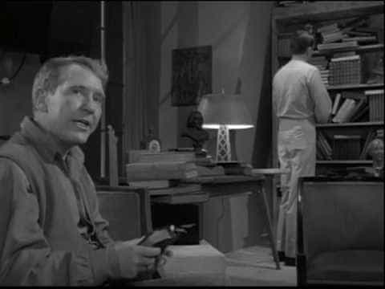

The Obsolete Man was an episode of the Twilight Zone that first aired in June 1961.
In the episode, we see an authoritarian government that has absolute rule over its citizenry. A complete suppression of free speech, free thought and a complete devaluation of literature, arts and religion. A dystopian atheistic regime purportedly based on logic and reason, but is based on coercion of thought backed up by the crushing power of the state.
In this world, a librarian is brought before a tribunal that determines the value of its citizens. The librarian, Romney Wordsworth, engages in a heated debate with the Chancellor. The Chancellor determines that since the state has banned books, a librarian is inherently obsolete. The librarian reveals he believes in God, a belief that has been banned by the state.
The arrogant Chancellor, in his smug self-possession, agrees to have Romney appointed a personal assassin who will not divulge Romney’s preferred way to die. Further, the Chancellor agrees to have Romney’s “liquidation” televised for the nation to watch. Romney knew he had gotten under the Chancellor’s skin, so he invites the Chancellor to come to his room an hour before his liquidation.

In his authoritarian bluster, the Chancellor sweeps in and lectures Romney about the supreme importance of the state and how people’s value is determined by authority figures in government, not from the value that people bring to their fellow man. The Chancellor falls for Romney’s plot, as the room is locked, so when the Chancellor tries to leave after asserting the state’s superiority over a lowly librarian, he finds he will die with the low-status librarian.
The Chancellor is immediately distraught, not just at his imminent demise, but also because he will die with a low-status person because the state fundamentally values nobody – not even a high-ranking Chancellor. The Chancellor eventually breaks, exclaiming “Oh, God!” and starts beating on the door right before the explosion. Romney looks at him calmly as he reads from his Bible as the Chancellor escapes at the last second before Romney himself is killed by the blast.
The Chancellor, having survived, realizes the horrible truth that the state values you only has long as you bring value to the state. Since he devalued and made a mockery of the state by begging for his life on live television, he is deemed obsolete by a new chancellor.
In his trademark brilliance, Serling orates:
The chancellor, the late chancellor, was only partly correct. He *was* obsolete. But so is the State, the entity he worshiped. Any state, any entity, any ideology that fails to recognize the worth, the dignity, the rights of man, that state is obsolete.
A potential interpretation of this episode is that the state has no business in determining what people should be able to engage in their professions. In a free market, if people find a librarian provides a valuable service they will pay for, then it is legitimate. The state should not be calling the shots on who gets to be deemed to be relevant and those who would executed as obsolete.
![[Image: Protesters-demonstrate-outside-Palais-de...r-2007.jpg]](../libcom.org/files/imagecache/article/images/blog/Protesters-demonstrate-outside-Palais-des-congr%C3%A8s-during-the-Bouchard-Taylor-hearings-on-reasonable-accommodation-in-November-2007.jpg)
Imagine protesters agitating against a policy or law being considered in Congress.
Abortion rights activists: Hands off my body you sexist males!
Gun rights supporters: Let us have our guns back!
Gay marriage advocates: Please let have equality with heterosexuals and have our marriages subsidized and recognized by you!
As TLP pointed out, see the problem developing here? The problem isn’t whether the government should do X, Y or Z, it is that we inherently accede to the framework the state is all-powerful and we need to petition the government for rights. Instead of wondering, “Why does the government decide who is or isn’t married?,” we demand equality in the sense that all of our relationships are judged by the state. It is a victory if you are a fan of narcissistic authoritarianism.
What the government gets wrong, we ignore everything it does that we agree with. In The Obsolete Man, would you have been upset if the Chancellor deemed a doctor relevant because he was an expert at heart surgery? You wouldn’t even blink an eye probably. That is the problem, we have been taught to ignore authoritarianism when we agree with or if it suits our needs. We only get angry and agitate for superficial change we it does not.
The episode is purportedly about the failures and dangers of a totalitarian state, seemingly with no ideology but an incredibly strong dose of moral puritanism. Moral puritanism is a personality disorder that was initially embodied by the aptly named Puritans who settled in colonial New England after the Glorious Revolution. Their untoward psychology reverberates to this day still, most clearly embodied by mainstream political correctness and feminism.
As always, the AV Club isn’t one to disappoint their liberal readership and I knew they would not like this episode, pretending to be put off by the religiosity of Romney. The reviewer gives the episode a B+, mostly for Burgress Meredith’s masterful portrayal of Romney. The comments are interesting and revealing, as they so the discomfit with an atheist state being against logic and reason – betraying their narcissistic authoritarianism.
While a few commenters get the message that any ideology has the ability to fall in the depths of rank authoritarianism, many commenters are uneasy about that sentiment. Many are quick to nail Republicans, Christians and Mitt Romney to the wall as far more likely to enact an oppressive Christian theocracy. Apparently, they took The Handmaiden’s Tale as plausible in modern America.
Anyway, this comment captures the narcissism:
Totalitarian theocracies are much more plausible than a government of atheist “anti-free-thinkers.”
Notice how atheist authoritarians are put in quotes, while theocracies are not. The commenter has a real difficult time handling that atheistic regimes are capable of suppressing thought. Plentiful historical examples aside, just in America, political atheists are a lock-step group. Conservative atheists, such as SE Cupp, are shunned in greater atheistic circles. What this commenter fails to realize is that authoritarian impulses may arise from religion, their root is in untoward psychology. You can’t just will away religion and suddenly free-thought will reign supreme.
That is the sleigh of hand, though. This commenter would agree with that and then start talking about hegemonic modes of oppression based on the dominant group’s desire to cleave the in’s and the out’s neatly. More dialogue about the real and invidious nature of hatred in society, as embodied by racism, misogyny and homophobia. In this entirely predictable approach, it would be revealed that they weren’t against religion—or moral puritanism—-they just wanted an approach that reflected their indoctrination.
One of the greatest delusions somebody can have is that they are free-thinker when they are not. Many people mindlessly tune into MSNBC, Fox News, Daily Kos, The Blaze and are told that by tuning in, they are becoming free, becoming educated and empowering themselves. No, said person or people are just doing what they are taught in society – to conform to the views of authority figures, in whatever form they come in.
That is the liberal agitation here that is tellingly revealed by mainstream liberals absolute hatred of Fox News. They don’t hate Fox News per se, they hate what it represents – the wrong authority figure. The anger is not over ignorance, it is not over hatred – it is the fact that one news outlet has broken from the lockstep of other media Toutlets and peddles lukewarm right-wing liberal fare. Before I go on, understand I am not critiquing liberalism as an ideology (even though I often do), I am critiquing how liberalism is expressed in society and why the underpinnings are so rotten.
Fox News represents what authority figures should not be: not liberal. The intense anger over the Bush administration, Fox News, and conservatives on the Supreme Court aren’t about the actual policies so much as it is about the fact that authoritarianism has one fatal flaw: the mask may be lifted off and it is revealed there is no God. As TLP says, there is nothing worse than an unreliable God.
You could think, “Well, I don’t believe in God, so I am cool.” Supremely doubtful. Everybody has faith in something and, in America, there is a great change you value it in a puritanical way. Reconsider Fox News. The consternation over the alleged false reporting, distortion of facts may or may not be true. The reason it causes great consternation is those who need to believe there will always be a reliable authority figure out there.
Unemployed? Turn on the TV, hear about the green shoots in the economy.
Gay and suicidal? Turn on the “It Gets Better” project.
Upset over pro-life advocates? Turn on Rachel Maddow and hear how it is all about misogyny and male ignorance.
As usual, I am not so interested in the intent of the people engaging the acts, but why people pay attention. Remember, if you are watching it, it is for you.
The existence of Fox News suggests that liberal authority figures could wrong. It simply isn’t just the fact that Fox News is doing what they shouldn’t be doing as an authority figure, it is that they are undermining liberal authority figures. If MSNBC is unreliable because Fox News reveals serious inconsistencies in MSNBC’s reporting, that isn’t a problem—it will become the problem. Fox News will have to be discredited, as holding up MSNBC as the gold standard for worship takes precedence over all else.
You could fairly wonder why some liberals would get so mad over one news outlet producing allegedly bad, ideological news. That is a fair point, but it is dead wrong about moral puritanism. One key facet about puritanism is that they desperately seek converts to their psychology. Puritanism is about repressing anti-social impulses, so any deviation has the potential to cause great exasperation in the afflicted puritan.
Fox News represents that. Many liberals desperately want to openly censor, distort and engage in outright hatred. Their narcissistic self-image prevents them understanding they already engage in that. I recall a liberal columnist waxing about how Republicans win elections because they will do whatever it takes to win, unlike the honorable Democrats who have values about honesty, integrity and commitment to truth. A bunch of hogwash. Liberals engage in great levels of censorship and distortion of the truth, as their puritanism necessitates that. Their narcissism prevents them from seeing themselves as being what they are supposedly against. Sure, Republicans do that as well, but Democrats and Republicans are often two sides of the same coin.
Considering The Obsolete Man, in this context, it shows why some liberals are uncomfortable with the episode. Expansive, muscular government is vigorously trumpeted by them, so when they see a work that depicts that any ideology, when given enough power, will slip in jack-booted authoritarianism it can be disconcerting. When the all-powerful worshiped entity is shown to be inherently fallible, there has to be a greater entity to fall back on.
I can imagine the reactions: “Oh, the Supreme Court will save us!” or “The voters will toss those bums next election!,” or, “Even if all those fail us, the arc of human history is toward justice and human rights, so we will always progress.”
These are all excuses invented in order to not face the fact that “God,” or all-powerful authority figures, cannot save you from yourself. Legalizing gay marriage won’t solve your own inability to come to terms with your homosexuality or adding more regulations on X industry won’t solve the fact that you mindlessly trust the system so much you don’t do a little research on product X you are trying out. The system doesn’t want you thinking for yourself, going your own way, much less asking questions that cut to the heart of the issues that America faces.
The system wants your fattening ass parked in the front TV at night and firmly in your cubicle in your mindless corporate job during the day. You exist to consume and produce for the state. If you do not do that, you have no value – you are obsolete. You don’t exist for yourself, you exist to maintain the state.
The fact we have to petition for rights is the wrong question, the right question is why does the government limit our actions in the first place? I am not advancing a libertarian argument, but fundamentally questioning why we accept authoritarianism so willingly. Serling was only partly correct in his final oration—what he failed to note is that the state is already obsolete.
{kind=link}
{kind=link}